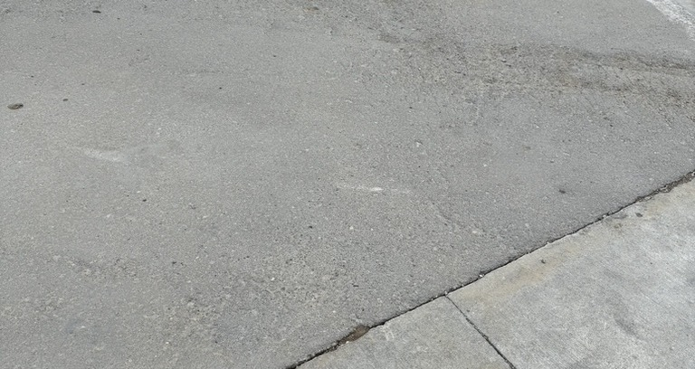

RCC • ROCK SOLID RCC
RCC Paving Projects
A selection of applications and field work from Rock Solid RCC.
Start Your Project →PROJECT GALLERY
RCC in the field.
Field photography from agricultural, grain, commercial and industrial RCC applications.





Want your next project here?
Let’s talk about your site and what RCC can do for it.
Request an Estimate →